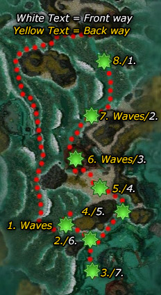

◉ Mission Map

Click to enlarge · Local cache · Wiki
Summary (click to expand)
The Young Turtles are being moved to the south, but the Kurzicks have planned an ambush. Protect the turtles as they travel while trying to find a way to convince the Luxons and Kurzicks to consider some type of truce so Shiro can be defeated.
Region: The Jade Sea · Mission: 9b of 13 · Type: Cooperative
Path: Luxon path
✓ Objectives
Escort the young turtles to the Leviathan Pits.
- At least 1 young turtle must survive. You have [5...0] remaining.
- Destroy the attacking plague force.
→ Walkthrough
There are two ways to defeat this mission: The front way is faster to finish. The back way is longer, but safer for master's reward.
The goal is to escort Young Turtles (which are now allied to your party) through the length of an explorable area to another outpost. The objective will be completed as long as one of them arrives safe.
Petras can provide you with Smoke Canisters which mark locations for the Siege Turtles to bombard (only harming foes); good placement is key to survival, especially for the master's reward. Though Petras can provide up to three canisters, it is generally most effective to use only one as this will focus all three turtles' fire on one location.
The Young Turtles are very fragile so keeping enemies from getting close is essential, especially the Kurzick Juggernauts which have the strength to kill Siege Turtles. Kurzicks will be spawning from different locations at the same time, remain close to the friendly NPCs and do not wander off ahead. When playing alone with henchmen/heroes only, bring a minion master and ensure that you have ranged attacks.
Front way
This walkthrough involves sticking with the turtles - see the Hard Mode section for a more advanced method involving running ahead at times to clear foes.
Walk towards the caravan lead by Argo to start the journey, and take a smoke canister from Petras. Shortly after the caravan begins moving, at point 1 on the map (white text), the turtles will stop and Kurzicks will approach. Drop your smoke canister amongst the Young Turtles and wait for them to arrive. The first foes will be three juggernauts and a handful of Kurzick Warriors. Focus on the juggernauts to prevent them from killing a Siege Turtle; the bombardment should make short work of the warriors. They will quickly be followed by more warriors and a few Kurzick Monks; leave the canister where it is and focus on the warriors first unless you find yourself struggling to overcome the monks' healing, in which case you may find it easier to kill the monks first while they are still trying to heal the bombarded warriors.
After these foes have been dealt with, the caravan will begin moving again. At point 2 on the map, you will see Kurzicks waiting up ahead. The turtles will stop just before them, and then they will begin to rush to the caravan. You may place the canister amongst the Young Turtles again, but as this fight mostly involves ranger and spellcaster foes, it may be more effective to place the canister on the beach to the left, near the coral bed. When the initial foes are almost all dead, Argo will announce that a lot of Kurzicks are approaching. The Kurzicks will come from all three directions; pick off the Kurzick Elementalists quickly and focus on the juggernauts when they arrive, then attack the warriors (especially if you did not place the smoke canister within the caravan) and finally finish off the rangers. When all foes are dead, the caravan will move on.
At point 3, there will be a large number of Kurzicks underneath the Leviathan, who will begin to rush the caravan after a short delay. These foes consist mainly of warriors, so place the smoke canister amongst the Young Turtles again. A wave of Kurzicks will then come from the north, again containing mainly warriors. Dispatch these as normal, and move on to point 4. Here there will be two groups of Kurzicks waiting, one to the south and one to the west. Aside from the juggernauts, these foes all use ranged attacks, so you may want to place the smoke canister near one group and let the Siege Turtles take them out while your party focuses on the other. However, beware that near the end of this fight two more Kurzick groups will come from the north and the west with large numbers of warriors, and you will want to move the smoke canister to the center of the caravan. If this gives you trouble, leave the canister in the middle of the caravan at the beginning of the fight.
At point 6 on the map you will initially face two groups of Kurzicks, one from the west and one from the south. Place the smoke canister at the top of the slope to the west and focus on the juggernauts and warriors before killing the smaller southern group. When these groups are dead, two very large waves of Kurzicks will approach from the west. However, do not panic: remain within the caravan until they arrive and then focus on the warriors. If done correctly, the rangers will stop near the smoke canister, and the Siege Turtles will make short work of them. Retreat to within the caravan when the second wave approaches so that the rangers will again be drawn to the canister, and fight this wave as you did the last one.
Once these foes are killed, the caravan will move towards point 7. Pick up the smoke canister and wait. A cinematic will trigger and then the Afflicted will assault both Luxons and Kurzicks from the north. They mostly come in small numbers, with only one large group, and pose little threat especially with both Kurzick and Luxon allies to help you. The Young Turtles will be far behind you, so they are at minimal risk. At the start of the fight, drop your smoke canister some way behind the gate; if you struggle, you can retreat to pull the Afflicted towards it. Do not place the canister too far forward or the slope will obstruct the Siege Turtles' line of sight. The mission will complete when the last of the Afflicted is killed.
Back way
This method takes 30 (with speedbuff eg. pcons) to up to 45 minutes to complete but gives you the opportunity to take your time and pull smaller groups and almost always results in a master's reward. As soon as the mission starts, turn right and head west to the far NW corner of the map. Turn south and hug the right hand wall and make your way to the very south of the map. The mission dialog will continue and you will even see Argo say, "Turtle clan, move out!". However, at this point, the turtles will continue to stay put near Gyala Hatchery.
There will be 10 areas of Kurzicks and Kurzick Juggernauts that you will need to clear out. Move up the mission path "backwards" starting from yellow point #1 on the map, killing all Kurzicks on the way, and ending up back at Gyala Hatchery and the turtles who will still be waiting for you at yellow point #8. Since you lack the Siege Turtles' firepower, be careful not to be overwhelmed - best technique here is to pull small groups at a time and then run out of the way of the large Kurzick forces that rush to that location. Draw each subsequent group and keep an eye on rush attacks. Deal with these smaller groups at your leisure.
After arriving back at the turtles, take the smoke canisters (from Petras) and immediately drop them on the Young Turtles. Kurzick groups will charge at the turtles from the sides while juggernauts will come from the south. Dropping the canisters on the Young Turtles will help take care of most of the Kurzick forces and the juggernauts can be killed before they reach the turtles. Grab a canister and follow the turtles back down the path south to yellow points #7 through #3. There will be a short encounter on the way near yellow point #6, so don't rush ahead of the turtles. However, this is a much smaller group of Kurzick and should pose no problem.
As you make your way south, the mission dialog will continue. Although the turtles will stop periodically and Argo will say things like "To arms! To arms! Kurzicks approaching!", you will not have any additional encounters. Once you arrive at point #4, the cinematic will trigger; however, the mission is not over yet. You need to face 3 small waves of Afflicted and defeat them. Try to battle them outside the gate away from the Young Turtles. You can still take advantage of the smoke canisters for this final battle. Finish them off and you've completed the mission and hopefully achieved a master's award.
Alternate back way

Start off from the northwestern corner as stated above but instead of going all the way to the bottom, head to the break in the surf in front of point #1 (see accompanying map). Kill the Kurzicks there. More Kurzicks will spawn behind you where you entered the gap. Pull carefully and they will go down easy.
Now make your way onto the beach to point #2 and kill the Kurzicks there. Concentrate on taking out the Kurzick Monks early as they are powerful healers that will make dealing with the Warriors and the juggernauts a dangerous affair. You now have a couple of options: you can continue south to point #3 or you can move to point #5. There will be Kurzicks you will need to take out at both points.
At point #3 you will face three waves of Kurzicks. Kill the first group quickly and retreat, to escape the rush attack of three groups. Let them converge and then carefully pull and dispatch them one group at a time. Once it's clear, continue to point #4.
At point #5, a large group of Kurzicks will spawn on the beach behind you. Clear them out by careful pulling before heading to point #4.
At point #4, clear out the small band of Kurzicks at the entrance to the Leviathan Pits. Now work your way north to point #6, going through point #3 or point #5, depending on which you have not cleared yet. There are two waves of Kurzicks at point #6 together with several juggernauts. Once they are all dead, head up to point #7 and talk to Petra to get a smoke canister. Drop it in the middle of the Young Turtles to protect them against the small incoming wave of Kurzicks. Once those are clear, the turtle caravan will start heading out. At point #1, a small band of Kurzicks will still spawn. Use the smoke canister to quickly deal with them. That would be the last you will see of Kurzicks. Escort the turtle caravan to the gates to trigger the cinematic. Remember to drop a smoke canister at the gates and fight the Afflicted at the gates. With the Siege Turtles' support, the Afflicted will go down quickly.
★ Bonus
To obtain the master's reward, players must ensure the survival of all five Young Turtles.
◆ Hard Mode

Some of the fights involve several enemy waves at once, so a strong team with good defense is needed. Proper use of the Siege Turtles is critical, and it's important to only ever use one smoke canister, even if you have multiple players.
Just follow the route on the map (back-tracking where necessary), fighting at each of the numbered points in sequence. You will often be running ahead of the turtles to clear areas before they arrive. You only fight with the turtles at points 3, 5, 7 and 9. In those cases, place the smoke canister in the middle of the Young Turtles and huddle your entire party around it. Don't worry about focusing fire on monks or backliners in general, just wait until the Siege Turtles kill all the immediate threats to the turtles then clean up the rest.
When not fighting with turtles always use flag and pull tactics, and where possible use corners and edges of jade waves to provide cover for your backline while bunching up enemies to increase AoE damage.
At spot 3, grab the canister from Petras and place it in front of the southern Siege Turtle for a single salvo on the juggernauts, then immediately move it to the Young Turtles.
The fight at spot 7 can cause problems. A large group of melee enemies will spawn from the north and rush the Young Turtles, use your party as a meat shield while the cannons kill them. Once all the attackers from the north are dead (you can ignore any stray monks or spirits for now) grab the canister and use it to help finish off the groups to the south.
At spot 8, position your group just on the north side of the outcropping. Be very careful to stay around this area and not extend too far out into the open - pull enemies back as needed. Once the first group is dead another two groups will spawn, one near you and one south. The nearest group you can ignore as they will engage your team, but the far group you will need to pull before they reach the turtles. One player will need to position themselves out on the sea as you finish the last enemies and be very careful to aggro the second spawn, pulling them back to the corner. Once the second wave are finished another two mobs will spawn, so do the same again. For these pulls a long range bow gives you the best chance. Be careful not to stray to the east - if you get near the turtles the group of enemies in the quarry will be spawned and attack them.
At spot 9 you can just drop your canister on the approaching enemy monk and party. When they are dead move it just inside the quarry gate and wait for the cinematic.
☠ Bosses & Elites
See wiki for boss list (or none listed).
✦ Tips & Notes
Skill recommendations
- Minion masters can prove very useful. The large numbers of Kurzicks will easily provide enough corpses for 2 minion masters, and the minions serve to distract them from the Young Turtles (if going the front way) or from your party members (if going the back way). With the dense enemy mobs, minion bombers are particularly effective.
- Bring skills that inflict blindness or weakness on foes, as most of the threat comes from juggernauts, and Kurzick Warriors and Rangers.
- Consider bringing skills that can affect multiple allies. With the enemies clustering around the Young Turtles and your party, area of effect skills that mitigate damage can help keep the turtles and your party alive (e.g. Ward Against Harm, Ward Against Melee, Ebon Battle Standard of Courage, Enfeebling Blood, Shadow of Fear). Blood Bond can be an effective ally heal, especially when used on their melee attackers.
- To make the Siege Turtles move faster, bring "Incoming!", "Fall Back!", or "Charge!". If you took the back way, it makes the march down to the end much less painful.
Notes
- If Argo dies, the turtle procession will continue, except without Argo's dialogue. The turtles will still wait as if his dialogue is going however.
- When placing the smoke canister at the final gates to fight the afflicted, the Siege Turtles will sometimes continue to fight all through the end cinematic, causing the screen and characters to shake noticeably on impact.
- Completion of this mission will fill in page #8 of the Shiro's Return storybook.
- At the end of this mission, your party appears in Leviathan Pits.
- You can increase your Luxon Faction cap limit by 7,000 by completing this mission along with Boreas Seabed and Unwaking Waters. This increase can only be applied once per account.